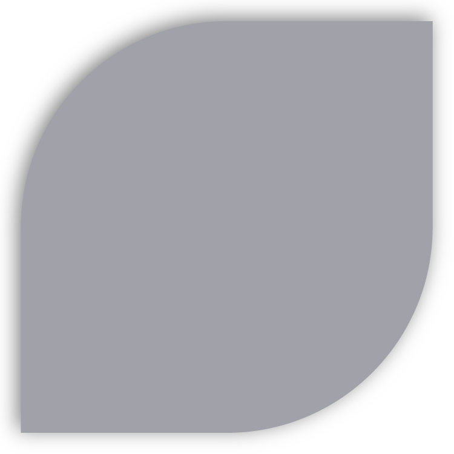
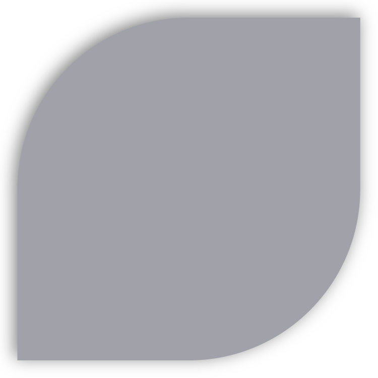

Experience Design
Polarr
reinforcing creativity
Polarr is a 'smart' creative photography startup exploring the edge of expression for OEMs and passionate photographers.
To comply with my non-disclosure agreement, I have omitted and obfuscated confidential information in this case study. All information in this case study is my own and does not necessarily reflect the views of Polarr.
Branding/Identity Experience Product UX Design
Specs
IN A NUTSHELL
Context
Experience Designer working cross-functionally with product, marketing and enterprise to connect brand promise with brand perception. | Polarr | Spring 2019 - Spring 2020
Creative
Victoria Flores (individual contributer)
Role
Reporting directly to the CEO/CTO, I tackled Polarr's branding refresh, conducted exploratory/comparitive research and prototyping for future products, re-invograted marketing strategy, ux and presentation, and designed new visual modalities consistent with the brand for their newest product 'Aura'.
Tools
Photoshop, Illustrator, AfterEffects, Figma, Notion, & Webflow
Branding
Refreshed an over-arching brand identity to cover the various creative dimensions, personalities and products of Polarr.
Product
I led research in naming the new product 'Aura', designed its logo, implemeted Beta recruitment splash website, and designed the marketplace MVP portion of the first iteration.
Marketing
I designed/conducted quant./qual. research on Polarr's user base, conducted A/B graphic testing on app. store listings, re-designed social channels, and concepted campaigns.
Enterprise
I led market/ux research for a prospective product, prototyped new website visions, and created an illustration schema for AI modules.
Overview
Branding
Challenge
Polarr is an ever-evolving spirit in the creative photography industry. It was daunting and energizing to create a visual framework sensitive to growth while still being recognizable and faithful to the company's values. The greatest challenge, due to startup nature, was developing/refining each parcel of the brand in-tandem with the day-to-day product/company design needs, jumping from logos to components in an instant.
Approach
Five years after my first exposure to exploring Polarr's early-stage branding/identity, I picked up where previous iterations left off: a logo, an inconsistent primary hue, and a brutalist font (Nimbus) that did not perform well internationally. We first conducted a comprehensive demographic and taste study of our entire user base. We then held a two-week design sprint to flesh out the foundation of the brand we wanted to create that best aligned with our new mission and user's devotion. Along the way, we defined our purpose, vision, values, promise, voice, and personality. We soon translated these to color, typography, grids, and typography. After this, I fleshed out the rest of the brand: logos, logotype, pattern, design guides, semantics, components, etc.
Goal(s)
Ensure that brand promise = brand perception.
Create an entire brand system beyond logo and type.
Establish brand consistency across products and platforms.
Impact
With renewed vigor of focus on branding and its impact on growth, we were able to re-evaluate each channel of interaction with our users. Some platforms were sunset, sites decommissioned, social accounts redesigned, and products given complete and visually consistent facelifts. Through the process, I also created new protocols for cross-disciplinary and remote collaboration. Most notably, we were better prepared for designing a new portfolio product called Aura under the umbrella brand.
 


Neon & Pastel Complementary Pairings


Overview
Product: Aura
Challenge
Developing branding for Aura was a constant moving target. Although we knew filters were our focus (based on emergent behavior of users posting/selling filter creations on Instagram), it was unclear what kind of application we were building. From a standalone marketplace to a social community, I conducted new branding sprints and research for each pivot of value propositions.
Approach
Through each iteration of brand and product experience, I sought to first understand what our creators needed to feel included, motivated, and inspired in Aura. I then ventured to maximize the expression of key design elements that excited them the most, such as real-time filter preview, QR code export, and their profile pages.
Goal(s)
Make our 'filter' as recognizable as an image.
Respect filter creators' desire to convey emotion.
Design a effervescent brand to support the community.
Impact
After ~6 months of brand-focused iteration for Aura, I successfully found a name for the product with over 80% positive reaction. I created a new iconic form for a 'filter' and redesigned filter exports and QR codes for aesthetics and recognizability.
Form Finding
Designing the 'Filter'
While designing the marketplace MVP, it became very clear to me that a 'filter' needed to appear distinctly different from a photo or creator. In designing the filter, being the total focus of the application and love of our prospective community, I wanted to create a logical and iconic shape. Using the conventional forms for a profile and photo, it was a simple 'form follows function' design deduction. What emerged is a lemon-drop/eye. The form works well articulated (flower shape) with multiple filters (as if in a 'pack), connotes the visual, and led ultimately to the logo, increasing recognizability and reinforcing the purpose of 'Aura'.
This prototype is pared down, due to iteration and product pivot from a standalone app. to its integration into Polarr's 24fps.
Photo
Profile

Filter
Aura Logo
Narrative Logo Design
After prototyping the marketplace MVP, we finally found a name adored by 'Aura' future users. Because the form was so striking, we immediately knew the 'filter' lemon-drop form would be a great starting place for creating the logo. After multiple explorations and critiques of permuting, coloring, and twisting the shape, I extrapolated a narrative and key design logic for the launch logo that represented the spirit of 'Aura'. We hoped it would reinforce the agnostic feature of a filter, build rapport and recognizability, and inspire the future growth and global perspective of crowd-sourced/inspired aesthetics.

Aura Logo
Resolution/Scaling Adaptation
Taking cues from SoundCloud's handling of a stroke logo at scale (reducing the number of strokes to maintain the same visual effect), I created eight scaled versions of the logo for each notable context (Android, iPhone, Browser, App. Store, favicon, and swag). In most contexts, the 4-stroke variation is used, while 3-stroke is reserved for tiny depictions and the 5-stroke for >256 pixels.
Favicon
Application Icon
Large Format / Swag
Special Note
Icons are shown here in relative scale for ease of comparison.


Overview
Marketing
Challenge
Integrating the new brand into marketing was a slow and steady long-term and incremental project. For each new marketing endeavor, branding had to be interpreted, iterated upon and implemented on each outreach basis. From completely revamping photography guidelines on Instagram to user research copy composing, we slowly built up a visual and semantic voice. Maintaining consistency across this iterative cycle was the most complex part of the process.
Approach
We prioritized real-time outreach efforts as the springboard for interpreting the brand application within marketing, Beta for 'Aura', the new help page, new Instagram, and, last but not least, the new QR code exports that would soon grace our users' externals social accounts. Each project followed the typical pattern of exploration, rapid iteration, design critique, and implementation/launch.
Goal(s)
Create consistency across all external-facing channels.
Promote 'Aura' and encourage recognizability.
Improve brand perception through each engagement.
Impact
With the new brand, we created a consistent visual language and style guide for our social photographic presence, launched our new support page, revived the company blog and careers page, vastly improved the QR code export, and most importantly, identified our intended and passionate target audience
Overview
Enterprise
Challenge
The enterprise team, the brains of Polarr, was gaining traction with OEM's. Initially hired as the head of platform user research, there was incredible ground to cover in investigating the potential of marketing our CV modules. Though the project was furloughed, I had the opportunity to explore AI/CV/CNN applications and produce new module illustrations, new site mockups (pre-rebrand), and conduct user research in industry and academia.
Approach
In creating the new site mockup concepts and module illustrations, I designed based on user/marketing research insights and the pre-re-brand guide (toting minimalism and hyper-realism).
Goal(s)
Maximize understanding of our most prominent AI modules.
Shorten the recognition time for CV developers to recognize potential applications of our platform.
Impact
Module illustrations and mockups (interactive photo) were very well received, albeit postponed in implementation. Additionally, research for the new platform was promising and created a new catalog of early adopters, applications, and market fit for later development.